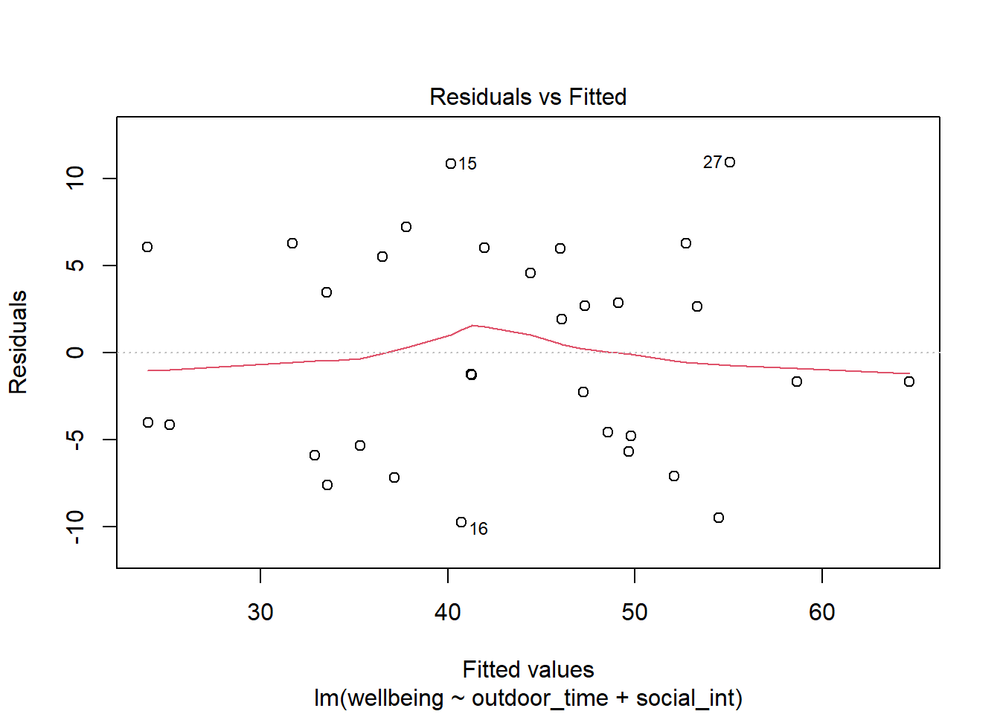
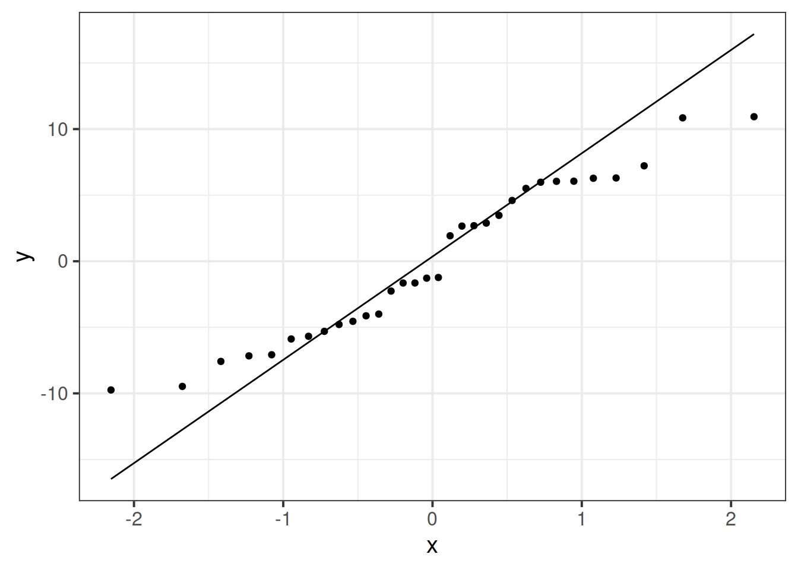

Recipe Book: LM Assumptions
Choose > Fit > Assess > Use
IMPORTANT!
It may help to think of the sequence of steps involved in statistical modeling as:
\[
\text{Choose} \rightarrow \text{Fit} \rightarrow \text{Assess} \rightarrow \text{Use}
\]
- We explore/visualise our data and Choose our model specification.
- Then we Fit the model in R.
- Next, we Assess the fit, to ensure that it meets all the underlying assumptions?
- Finally, we Use our model to draw statistical inferences about the world, or to make predictions.
The LINE Mnemonic
The assumptions of the linear model can be committed to memory using the LINE mnemonic:
- Linearity: The relationship between \(y\) and \(x\) is linear.
- Independence of errors: The error terms should be independent from one another.
- Normality: The errors \(\epsilon\) are normally distributed
- Equal variances (“Homoscedasticity”): The scale of the variability of the errors \(\epsilon\) is constant at all values of \(x\).
When we fit a model, we evaluate many of these assumptions by looking at the residuals
(the deviations from the observed values \(y_i\) and the model estimated value \(\hat y_i\)).
The residuals, \(\hat \epsilon\) are our estimates of the actual unknown true error term \(\epsilon\). These assumptions hold both for a regression model with a single predictor and for one with multiple predictors.
Setup
library(tidyverse)
# Read in data
mwdata = read_csv(file = "https://uoepsy.github.io/data/wellbeing.csv")Recall the form of our model which we fitted and stored as wbmodel:
\[ \text{Wellbeing} = \beta_0 + \beta_1 \cdot \text{Outdoor Time} + \beta_2 \cdot \text{Social Interactions} + \epsilon \]
Which we fitted in R using:
wbmodel <- lm(wellbeing ~ outdoor_time + social_int, data = mwdata)Note: We have have forgone writing the 1 in lm(y ~ 1 + x.... The 1 just tells R that we want to estimate the Intercept, and it will do this by default even if we leave it out.
Linearity
In simple linear regression with only one explanatory variable, we can assess linearity through a simple scatterplot of the outcome variable against the explanatory. In multiple regression, however, it becomes more necessary to rely on diagnostic plots of the model residuals. This is because we need to know whether the relations are linear between the outcome and each predictor after accounting for the other predictors in the model.
In order to assess this, we use partial-residual plots (also known as ‘component-residual plots’). This is a plot with each explanatory variable \(x_j\) on the x-axis, and partial residuals on the y-axis.
Partial residuals for a predictor \(x_j\) are calculated as: \[ \hat \epsilon + \hat \beta_j x_j \]
In R we can easily create these plots for all predictors in the model by using the crPlots() function from the car package.
Create partial-residual plots for the wbmodel model.
Remember to load the car package first. If it does not load correctly, it might mean that you have need to install it.
Write a sentence summarising whether or not you consider the assumption to have been met. Justify your answer with reference to the plots.
library(car)
crPlots(wbmodel)
The smoother (the pink line) follows quite closely to a linear relationship (the dashed blue line), suggesting that the linearity assumption is met.
Equal variances (Homoscedasticity)
The equal variances assumption is that the error variance \(\sigma^2\) is constant across values of the predictors \(x_1\), … \(x_k\), and across values of the fitted values \(\hat y\). This sometimes gets termed “Constant” vs “Non-constant” variance. Figures 1 & 2 shows what these look like visually.

Figure 1: Non-constant variance for numeric and categorical x

Figure 2: Constant variance for numeric and categorical x
In R we can create plots of the Pearson residuals against the predicted values \(\hat y\) and against the predictors \(x_1\), … \(x_k\) by using the residualPlots() function from the car package. This function also provides the results of a lack-of-fit test for each of these relationships (note when it is the fitted values \(\hat y\) it gets called “Tukey’s test”).
ncvTest(model) (also from the car package) performs a test against the alternative hypothesis that the error variance changes with the level of the fitted value (also known as the “Breusch-Pagan test”). \(p >.05\) indicates that we do not have evidence that the assumption has been violated.
Use residualPlots() to plot residuals against each predictor, and use ncvTest() to perform a test against the alternative hypothesis that the error variance changes with the level of the fitted value.
Write a sentence summarising whether or not you consider the assumption to have been met. Justify your answer with reference to plots and/or formal tests where available.
residualPlots(wbmodel)
## Test stat Pr(>|Test stat|)
## outdoor_time -0.3478 0.7306
## social_int -0.1068 0.9157
## Tukey test -0.4189 0.6753#test against the alternative hypothesis that error variance changes with level of fitted value
ncvTest(wbmodel)## Non-constant Variance Score Test
## Variance formula: ~ fitted.values
## Chisquare = 0.001925809, Df = 1, p = 0.965Partial residual plots show no clear non-linear trends between residuals and predictors. Visual inspection of suggested little sign of non-constant variance, with the Breusch-Pagan test failing to reject the null that error varance does not change across the fitted values (\(\chi^2(1)=0.002\), \(p = .965\)).
Create the “residuals vs. fitted plot” - a scatterplot with the residuals \(\hat \epsilon\) on the y-axis and the fitted values \(\hat y\) on the x-axis.
You can either do this:
- manually, using the functions
residuals()andfitted(), or - quickly by giving the
plot()function your model. This will actually give you lots of plots, so we can specify which plot we want to return - e.g.,plot(wbmodel, which = 1)
You can use this plot to visually assess:
- Linearity: Does the average of the residuals \(\hat \epsilon\) remain close to 0 across the plot?
- Equal Variance: does the spread of the residuals \(\hat \epsilon\) remain constant across the predicted values \(\hat y\)?
The long way:
# Notice that we create a tibble and pass it directly to ggplot()
# using the %>%.
# This means we don't have to store it as an object in the environment,
# it is just being used to create the plot
tibble(
residuals = residuals(wbmodel),
fitted = fitted(wbmodel)
) %>%
ggplot(aes(x = fitted, y = residuals)) +
geom_point() +
geom_smooth(color="red",se=FALSE)
The quick way:
plot(wbmodel, which=1)
The horizontal red line shows that the average of the residual remains close to zero across the fitted values.
The spread of the residuals remains reasonably constant across the fitted values.
Independence
The “independence of errors” assumption is the condition that the errors do not have some underlying relationship which is causing them to influence one another.
There are many sources of possible dependence, and often these are issues of study design. For example, we may have groups of observations in our data which we would expect to be related (e.g., multiple trials from the same participant). Our modelling strategy would need to take this into account.
One form of dependence is autocorrelation - this is when observations influence those adjacent to them. It is common in data for which time is a variable of interest (e.g, the humidity today is dependent upon the rainfall yesterday).
In R we can test against the alternative hypothesis that there is autocorrelation in our errors using the durbinWatsonTest() (an abbreviated function dwt() is also available) in the car package.
Perform a test against the alternative hypothesis that there is autocorrelation in the error terms.
Write a sentence summarising whether or not you consider the assumption of independence to have been met (you may have to assume certain aspects of the study design).
dwt(wbmodel)## lag Autocorrelation D-W Statistic p-value
## 1 -0.318249 2.600574 0.16
## Alternative hypothesis: rho != 0A Durbin-Watson test of autocorrelation failed to reject the null hypothesis that there was no serial dependence in the error (\(DW = 2.6\), \(p = .138\)). We will also assume that observations to be randomly sampled during study recruitment.
Normality of errors
The normality assumption is the condition that the errors \(\epsilon\) are normally distributed.
We can visually assess this condition through histograms, density plots, and quantile-quantile plots (QQplots) of our residuals \(\hat \epsilon\).
We can also perform a Shapiro-Wilk test against the alternative hypothesis that the residuals were not sampled from a normally distributed population.
- The
shapiro.test()function in R performs a Shapiro-Wilk test. plot(model_name, which = 2)gives us a QQplot of the residuals (or you can do it manually by extracting the residuals usingresid(model_name)).
Assess the normality assumption by producing a qqplot of the residuals (either manually or using plot(model, which = ???)), and conducting a Shapiro-Wilk test.
Write a sentence summarising whether or not you consider the assumption to have been met. Justify your answer with reference to plots and/or formal tests where available.
We can get the QQplot from one of the plot(model) plots:
plot(wbmodel, which = 2) Or we can make our own:
Or we can make our own:
tibble(
resids = residuals(wbmodel)
) %>% ggplot(aes(sample=resids))+
geom_qq()+
geom_qq_line()
shapiro.test(residuals(wbmodel))##
## Shapiro-Wilk normality test
##
## data: residuals(wbmodel)
## W = 0.94831, p-value = 0.129The QQplot indicates that the residuals follow close to a normal distribution, although with evidence of heavier tails. A Shapiro-Wilk test failed to reject the null hypothesis that the residuals were drawn from a normally distributed population (\(W = 0.95\), \(p = .129\))
Multicollinearity
Recall our interpretation of multiple regression coefficients as
This interpretation falls down if predictors are highly correlated because if, e.g., predictors \(x_1\) and \(x_2\) are highly correlated, then changing the value of \(x_1\) necessarily entails a change the value of \(x_2\) meaning that it no longer makes sense to talk about holding \(x_2\) constant.
We can assess multicollinearity using the variance inflation factor (VIF), which for a given predictor \(x_j\) is calculated as:
\[
VIF_j = \frac{1}{1-R_j^2} \\
\]
Where \(R_j^2\) is the coefficient of determination (the R-squared) resulting from a regression of \(x_j\) on to all the other predictors in the model (\(x_j = x_1 + ... x_k + \epsilon\)).
The more highly correlated \(x_j\) is with other predictors, the bigger \(R_j^2\) becomes, and thus the bigger \(VIF_j\) becomes.
The square root of VIF indicates how much the SE of the coefficient has been inflated due to multicollinearity. For example, if the VIF of a predictor variable were 4.6 (\(\sqrt{4.6} = 2.1\)), then the standard error of the coefficient of that predictor is 2.1 times larger than if the predictor had zero correlation with the other predictor variables. Suggested cut-offs for VIF are varied. Some suggest 10, others 5. Define what you will consider an acceptable value prior to calculating it.
In R, the vif() function from the car package will provide VIF values for each predictor in your model.
Calculate the variance inflation factor (VIF) for the predictors in the model.
Write a sentence summarising whether or not you consider multicollinearity to be a problem here.
vif(wbmodel)## outdoor_time social_int
## 1.13023 1.13023VIF values <5 indicate that multicollinearity is not adversely affecting model estimates.

This workbook was written by Josiah King, Umberto Noe, and Martin Corley, and is licensed under a Creative Commons Attribution 4.0 International License.